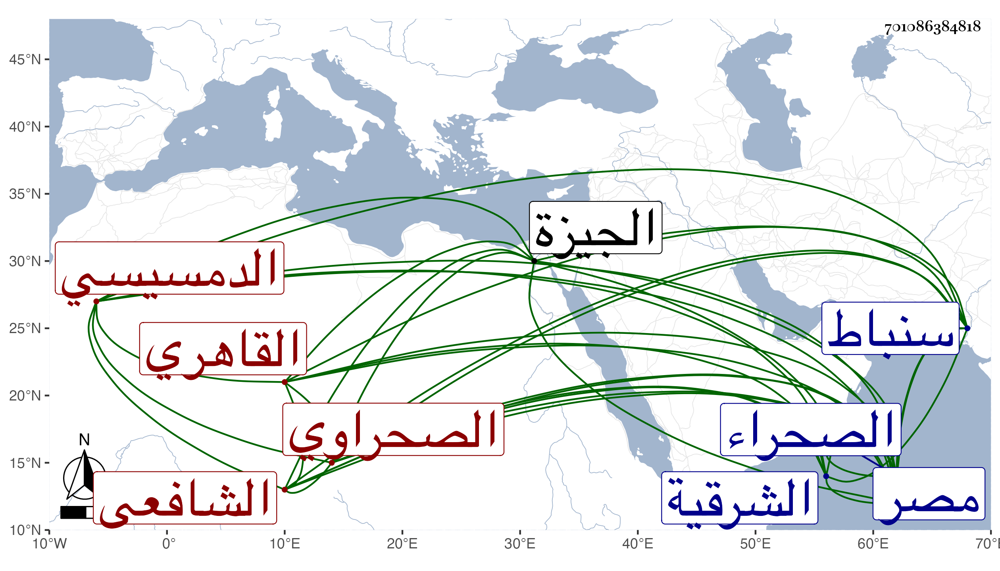

0902Sakhawi.DawLamic.ITO20230111-ara1.EIS1600.701086384818
Biography ID: 701086384818
1027
يحيى بن محمد بن علي بن محمد بن أحمد بن أبي الرجاء الشرف بن الشمس الدمسيسي الأصل القاهري الصحراوي الشافعي سبط الشمس الغراقي أمه شقيقة أبي البركات وإخوته والماضي أبوه ويعرف بالدمسيسي ودمسيس من الشرقية تجاه سنباط . ولد في إحدى الجماديين سنة ثلاث وثلاثين وثمانمائة بتربة يلبغا من الصحراء ونشأ بها فحفظ القرآن والمنهاج الفرعي والأصلي والشاطبيتين وألفية النحو وعرض على العلم البلقيني والزين البوتيجي وقرأ عليه في الفقه وسمع عليه في الفرائض وغيرها بل أخذ الفرائض والحساب عن الجمال الدمياطي وخاله أبي البركات ولازمه في الفقه والعربية وكذا تردد في الفقه للمناوي والعبادي ولازم الجوجري في التقاسيم والفخر المقسي في تقاسيم الكتب الأربعة المتداولة بل قرأ على أولهما شرح شيخه المحلي على المنهاج وجل شرحه لجمع الجوامع وعلى ثانيهما إلى القياس من العبري شرح البيضاوي وسمع عليهما غير ذلك وأكثر من أخذ الفقه عن البكري وكذا أخذ فيه وفي غيره عن أبي السعادات البلقيني وقرأ في العربية أيضا على السيد شيخ الجوهرية ونظام الحنفيين بل قرأ على ثانيهما في الطوالع وكذا أخذ عن كريم الدين العقبي واختص بالكافياجي حتى قرأ عليه شرح القواعد وكثيرا من تصانيفه ولازمه في فنون وتدرب في الكتابة بسليمان بن داود الهندي وكتب بخطه أشياء وقال لي أنه حضر مجالس شيخنا وأذن له غير واحد في التدريس والإفتاء وناب في القضاء عن أبي السعادات فمن بعده بعد تكسبه بالشهادة وقتا واختص بالأسيوطي كثيرا وأضيف إليه في أيامه قضاء الجيزة وجامعها برغبة الجلال البكري له عن ذلك في ربيع الأول سنة ست وسبعين فقرأت بخطه للأسيوطي أنه رغب عنه للشيخ الإمام العالم شرف الدين مفتي المسلمين خليفة الحكم العزيز بالديار المصرية لما علم من ديانته وعفته وكفايته ، وكذا راسل الكافياجي الأسيوطي في ذلك وحج في سنة خمس وثمانين وجاور التي بعدها وحضر عندي هناك قليلا وأقرأ هناك في شرح المحلي وغيره وكذا أقرأ هنا مع مداومته على الاشتغال حتى أنه قرأ على الكمال بن أبي شريف في البيضاوي ثم على أخيه البرهان وعلي في التقريب للنووي وفي شرحي له وحصله واغتبط بذلك جدا وأمعن في التردد إلي والابتهاج بي ثم لا زال ينقل عن الكافيجي ثناءه لي وإجلاله غيبة وحضورا ولي بوجوده سرور كبير فقضاياه جلية وسجاياه علية ونعم الرجل عقلا وفهما وأدبا وتواضعا وأصلا .
